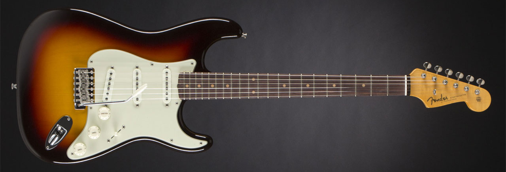
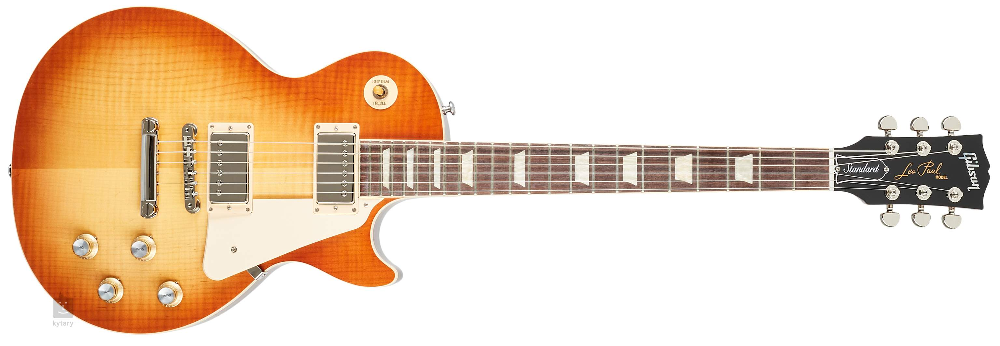
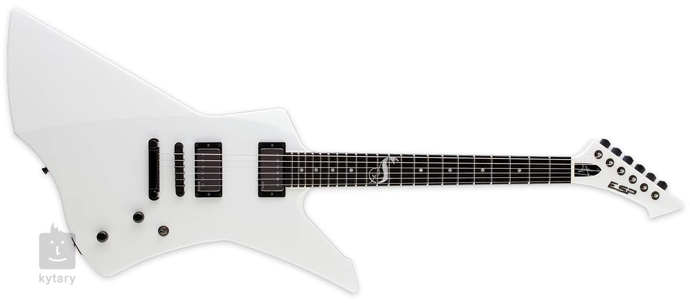
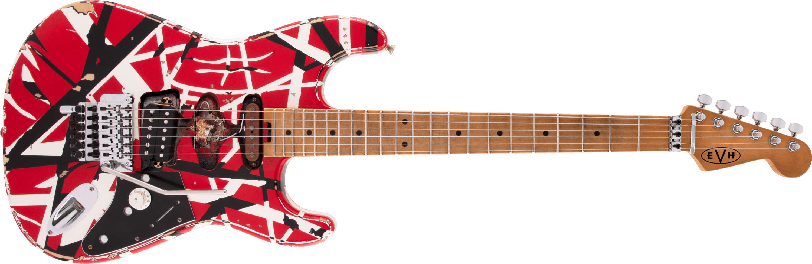

Ecco una top 5 chitarre elettriche, ovviamente non per importanza ma per influenza su quella che è la storia della musica internazionale.
Paul Reed Smith nasce nel 1985 nel Maryland. Nata come piccolo workshop di liuteria raffinata è diventata presto un'alternativa ad altri nomi eccellenti imponendosi nel mercato mondiale della chitarra elettrica grazie ad una qualità costruttiva e sonora unica. La PRS Custom 24 è diventata una vera e propria icona. Negli anni 90 ha introdotto una linea di produzione Coreana detta SE per offrire la qualità delle chitarre PRS a tutti.
Il 1959 è stato un anno cruciale negli annali della storia Stratocaster.E' stato il prima anno in cuile caratteristiche moderne, come la tastiera in palissandro e l'ormai iconica finitura 3-Color Sunburst, hanno fatto la loro comparsa iniziale.La Custom Shop Stratocaster Vintage Custom 1959, sfoggia sia una tastiera in palissandro che una meravigliosa finitura 3-Color Sunburst, oltre ad altre caratteristiche interessanti e rare degli anni formativi di casa Fender.La finitura laccata "NOS flash-coat" permette alla chitarra di respirare in modo più libero e omogeneo per il sustain del suono e un tono caldo e avvolgente.Il manico presenta un raggio composto vintage da 7,25"-9,5", che è presente su alcuni modelli rarissimi di Fender, conferendogli una sensazione unica anche tra i modelli di ispirazione vintage.Presenta inoltre di tasti vintage medi, leggermente più grandi dei normali e molto comodi da suonare.Altre caratteristiche che troviamo su questa Custom Shop includono un corpo in Ontano selezionato in due pezzi, manico in acero con profilo "C" del '59, 21 tasti, tre pickup single coil Custom Shop Hand-Wound '59, selettore a cinque posizioni, cablaggio vintage, battipenna in nitrocellulosa verde menta a tre strati, ponte tremolo sincronizzato American Vintage, capotasto in osso e meccaniche vintage.La Fender Custom Shop Stratocaster Vintage Custom 1959 è la chitarra che segna la Leggenda!Include Custodia originale rigida Deluxe, tracolla Custom Shop in pelle e Certificato di Autenticità.
La progettazione di questo strumento si deve a Lester William Polfus, divenuto famoso come Les Paul.Le origini del progetto Les Paul risalgono al 1940 quando, eseguendo due tagli sulla cassa della sua Epiphone, Les Paul gettò le basi per la creazione della The Log («Il tronco»), primo prototipo della chitarra: la costruì nella fabbrica Epiphone di sabato, quando il personale era assente, cosicché i macchinari fossero a sua completa disposizione. Seguendo l'esatto proseguimento della tastiera, tagliò il corpo in modo da dividerlo in tre parti: due in corrispondenza delle buche ad "effe" e quella centrale, che successivamente ricoprì con una tavola di legno di pino da 10x10 cm e attaccò al corpo con vistose viti e placchette di metallo. In questo modo la parte centrale si trasformò in un sostegno rigido per i pick-up, progettati e realizzati dallo stesso Les Paul. Il risultato fu interessante: un aumento della risposta timbrica e del sustain.
L’azienda nacque nel 1975, quando Hisatake Shibuya aprì a Tokyo un negozio che vendeva parti di ricambio per chitarre, con l’insegna Electric Sound Products (da cui ESP). L’anno successivo ESP si era già guadagnata una buona reputazione quale distributore di pezzi di ricambio di alta qualità e, nel frattempo, aveva iniziato anche a produrre chitarre che venivano distribuite sul mercato giapponese con i marchi ESP e Navigator.In particolare quest’ultimo modello divenne famoso soprattutto quando i Metallica raggiunsero l’apice della fama dei primi anni novanta. Ancora oggi i modelli simili alla famosa Explorer bianca di James Hetfield vengono venduti a prezzi ben superiori a quello che era il loro originario prezzo di mercato.Nel 2002, la ESP è entrata in graduatoria tra le società che crescono più velocemente nell’industria della musica.
Il 6 ottobre 2020 ci ha lasciati Eddie van Halen, la chitarra dei Van Halen, uno dei gruppi più amati degli anni Settanta/Ottanta. Artista leggendario, Eddie è stato un rivoluzionario nel mondo della musica rock, forse il più influente chitarrista dopo Jimi Hendrix.Il nome della chitarra rimanda ovviamente al celebre Frankenstein, la creatura dell’omonimo romanzo di Mary Shelley, e la Stratocaster, il modello di chitarra elettrica più famoso della Fender. L’ispirazione per il nome venne a Eddie dal fatto che in effetti la sua chitarra mescolava due entità tra loro differenti.La chitarra di van Halen aveva infatti il suo unico e corposo della Gibson Les Paul, ma la forma e gli attributi fisici di una qualunque Stratocaster. Non fosse per un disegno iconico che è rimasto nella storia del rock;a chitarra fu modificata da Eddie per poterci adattare un pickup humbucker Gibson PAF. Proprio per questo il suo suono era molto simile a quello di una chitarra Gibson.Tale il successo della band, del chitarrista e dello strumento, che una replica della Frankenstrat originale si trova oggi nel National Museum of American History di Washington D.C.